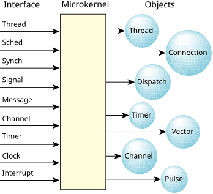

The microkernel implements the core POSIX features used in embedded realtime systems, along with the fundamental QNX OS message-passing services.
The POSIX features that aren't implemented in the procnto microkernel (file and device I/O, for example) are provided by optional processes and shared libraries.
Successive microkernels from BlackBerry QNX have seen a reduction in the code required to implement a given kernel call. The object definitions at the lowest layer in the kernel code have become more specific, allowing greater code reuse (such as folding various forms of POSIX signals, realtime signals, and QNX OS pulses into common data structures and code to manipulate those structures).
At its lowest level, the microkernel contains a few fundamental objects and the highly tuned routines that manipulate them. The OS is built from this foundation.

Some developers assume our microkernel is implemented entirely in assembly code for size or performance reasons. In fact, our implementation is coded primarily in C; size and performance goals are achieved through successively refined algorithms and data structures, rather than via assembly-level peep-hole optimizations.